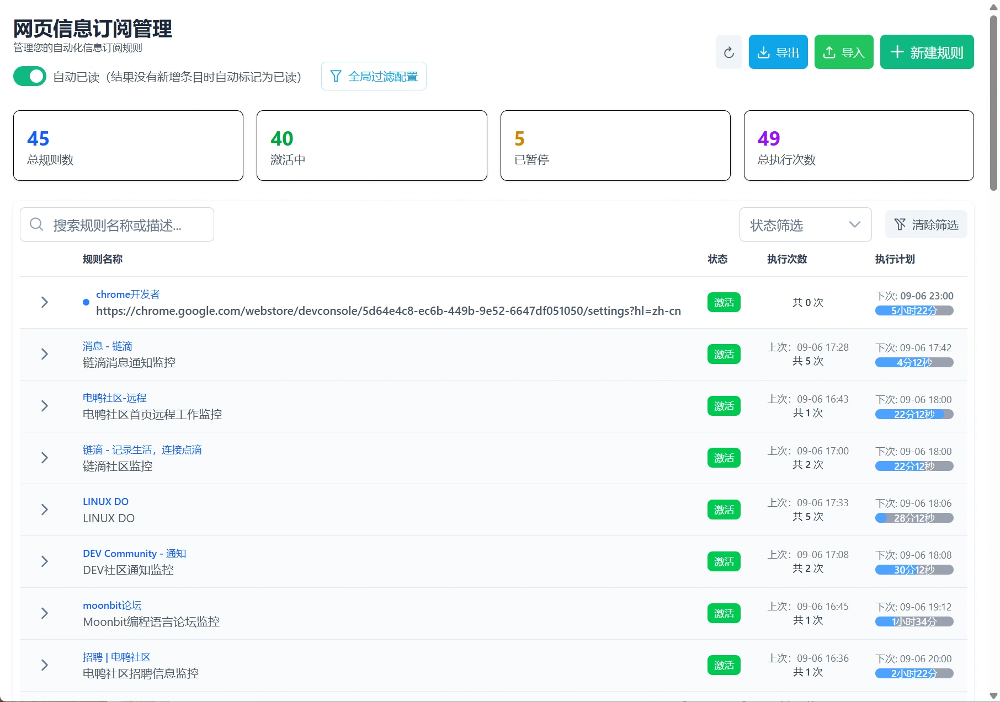
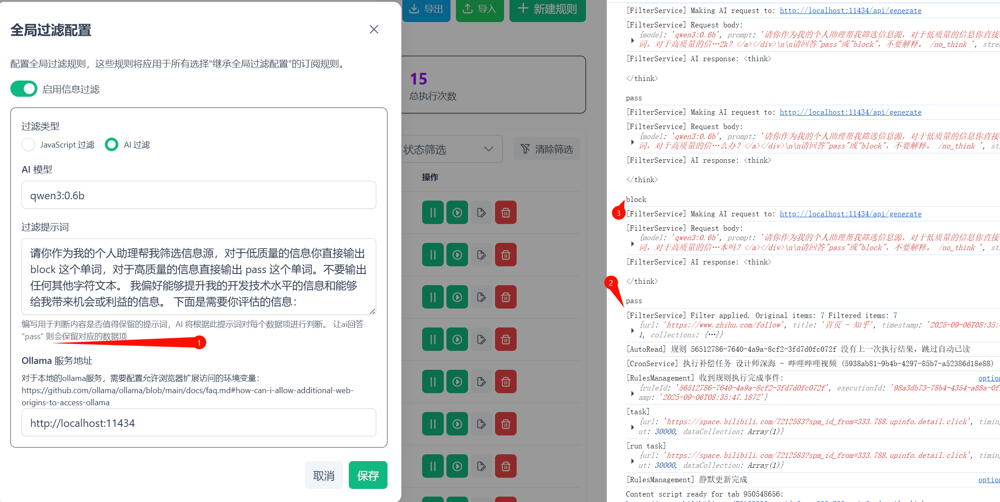

首页
InfoFlow：自动获取关注信息的浏览器扩展
可以作为 distill Web Monitor 的开源替代浏览器扩展
我一直有订阅网页更新的需求，但是RSS时代可以说是已经死亡了，现在的信息封闭越来越严重。而且千人千面等技术的应用导致像 rsshub 这样的网站也不太行了。
于是一开始我发现了 distill Web Monitor 这个浏览器扩展，很好用，唯一的问题是我没有国外信用卡，没法付费。他又有数量限制。
于是我萌发了自己开发相关扩展的想法，这就是 InfoFlow 的由来
git 项目地址

数据过滤/清洗功能

InfoFlow 待办
规则的js选择器实现还有问题总是匹配到数据，即使写 return ''
一键清空task执行记录记录，现在只能一个个删除
建议插件图标显示消息数（已实现），另外，最好不要检查时插件图标先出现消息标志然后再消失，不知道是否不好实现。（这里的问题是执行中的task记录不应该被算作未读记录）
第一次保存配置后，最好检测一次，不然，第一次执行会出现匹配到的情况，其实是假象而已。（疑似和 执行中的task记录不应该被算作未读记录 相关）
建议增加个匹配后处理的 js。比如，匹配后增加两项：1 跳转页面，如果不跳转就是当前匹配到的页面，如果跳转就是具体指定页面。 2 跳转后执行 js。这样就实现了自动化处理某些操作，就不仅仅是通知了。
规则新增邮件、webhook 等通知配置。我这边目前仅图标显示消息标志，也没浏览器消息通知或播放声音等（新增默认选中的浏览器消息通知配置和播放声音配置）。
rule 配置面板css js 切换后旧设置丢失了，建议保存。
跳转到目标页面后可以设置延迟，不过有 js 都能实现。
可以通过 webdav 等同步和备份配置数据。
信息流过滤模式
对于知乎或者其他的什么网站支持通过 ai 和 js 在阅读时进行过滤
可以考虑一些通用性的设计，例如 选择器 和 过滤器